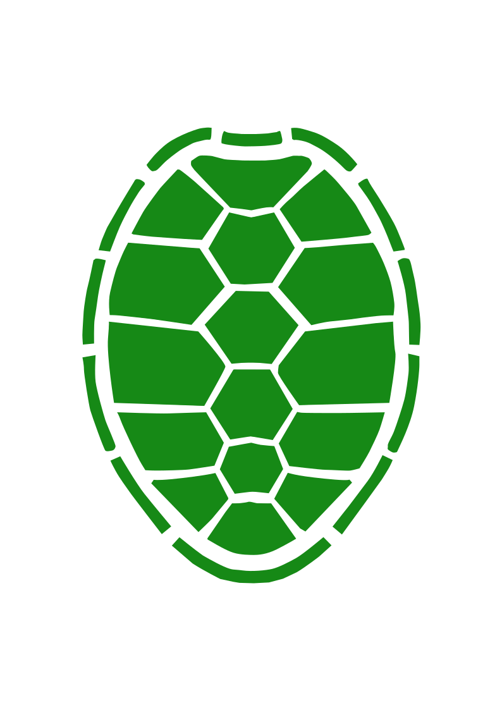
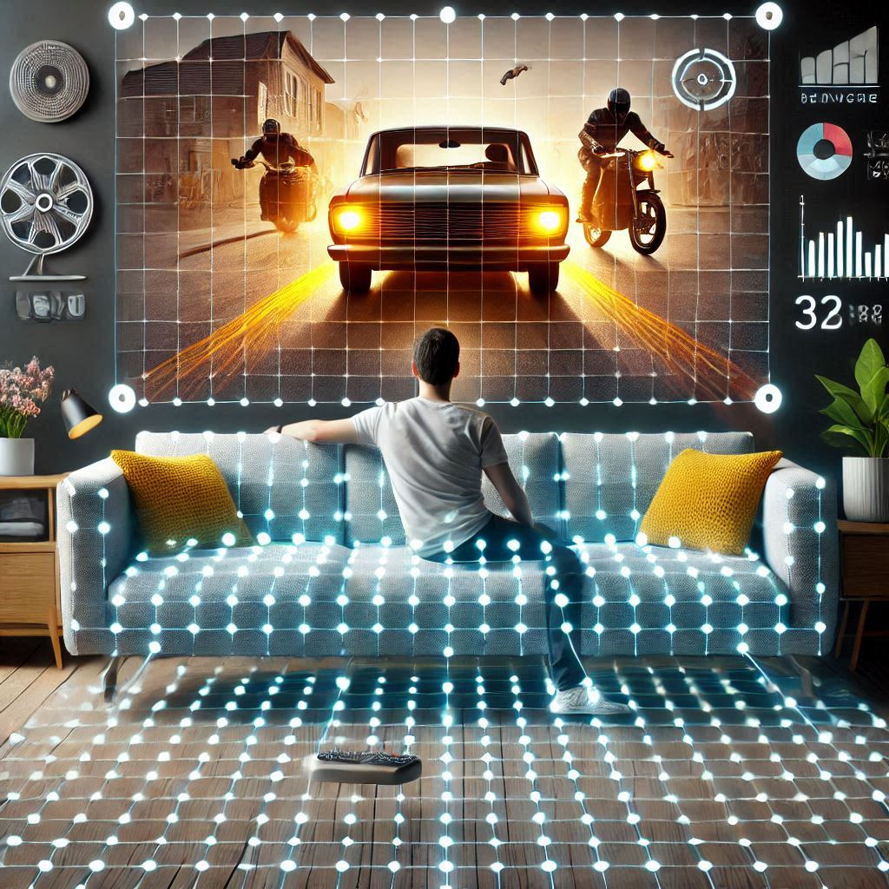
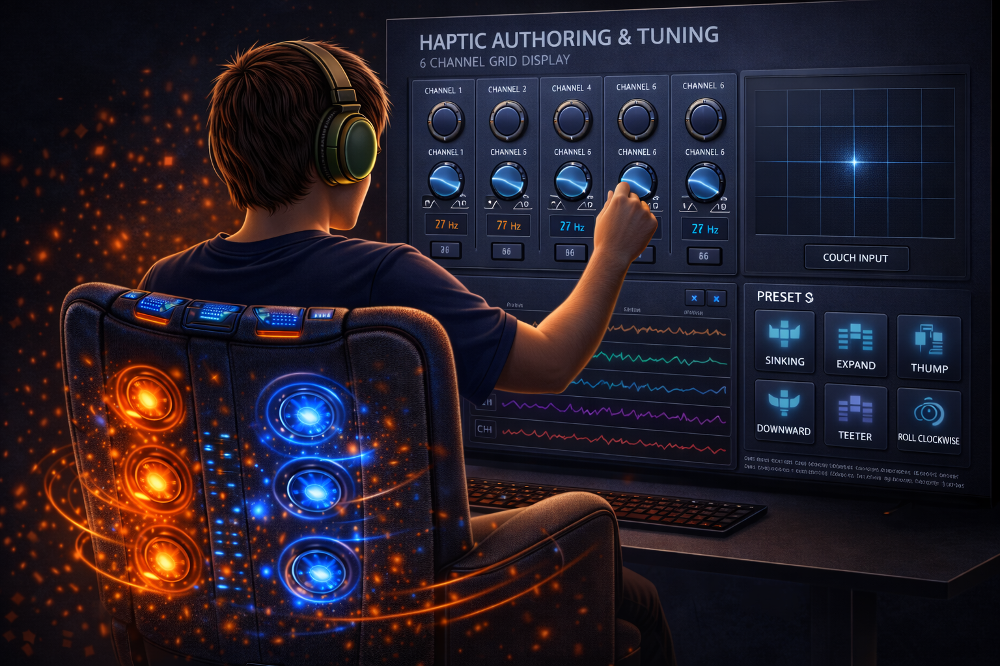
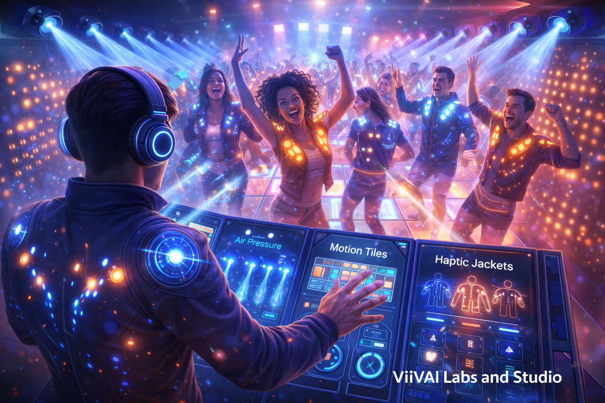

Comfort vs. efficiency
Engineered human attachment solutions ensure comfort, safety, compactness, unobtrusiveness, and power efficiency across wearable and embedded formats.

Technology
ViiVAI combines perception science, multimodal AI, and device-aware rendering to translate content into coherent spatial haptic patterns that feel purposeful on the body.
Engineered human attachment solutions ensure comfort, safety, compactness, unobtrusiveness, and power efficiency across wearable and embedded formats.
Soft sensors and haptic actuators are arranged in grid architectures that optimize user throughput using neuroscience and physiological principles.
Core Innovation
The key innovation is the automatic generation of haptic feedback from audio, motion, action, and contextual signals. ViiVAI’s proprietary algorithms are grounded in decades of perceptual research and convert multimodal information into coherent spatial patterns that feel integrated, synchronized, and expressive.
Instead of relying on blunt whole-body vibration, the system produces structured, body-mapped tactile experiences with semantic meaning.
Algorithms & Components
A plugin for perception-based algorithm set for auto-generating high-resolution dynamic and spatial sensations on haptic grids.
A reusable database of haptic effects, algorithms, and device models that supports technology-agnostic deployment.
An audio-to-spatial-haptics engine that maps contextual meaning to the body through synesthetic correspondences.

Computer vision pipelines that translate object motion and trajectories in video into tactile motion and spatial patterns.
Classification models driven from sensors in peripherals that interpret user actions and convert them into expressive patterns conveying intent.
A natural-language generation layer for producing expressive haptic patterns from prompts, text, and semantic descriptions.
An agentic pipeline that auto-translates media to haptics while allowing user preferences, intervention, and device adaptation.

A toolset for creating, editing, routing, and tuning haptic feedback across content pipelines and deployment targets.

A customizable interface for applications like Haptic DJ, coordinating tactile dance-floor effects, wall bursts, and crowd control feedback.
A consumer-facing application layer for experiencing haptic media through portable, connected, and personalized interfaces.